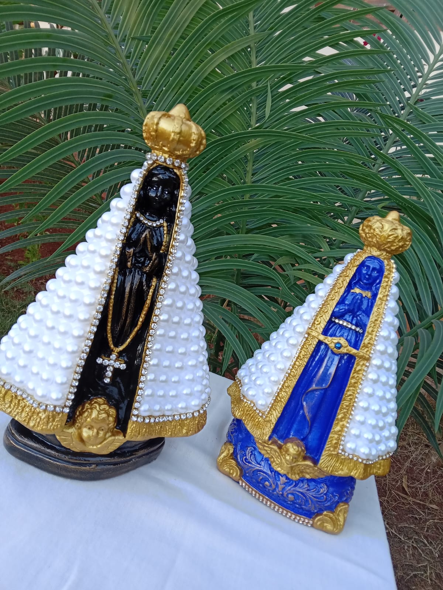
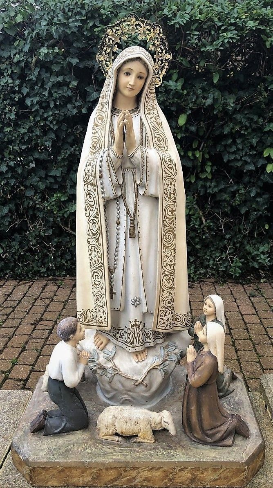
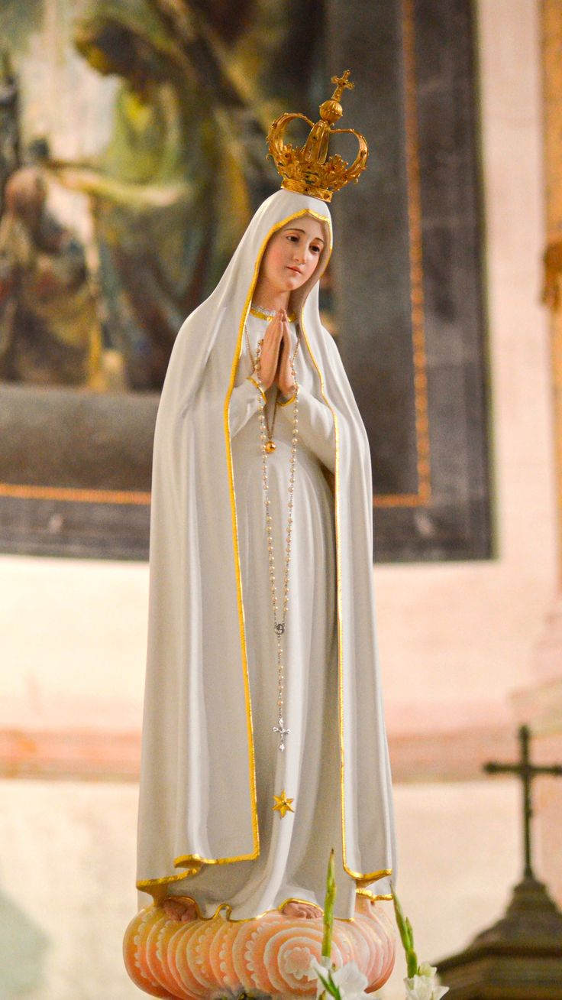
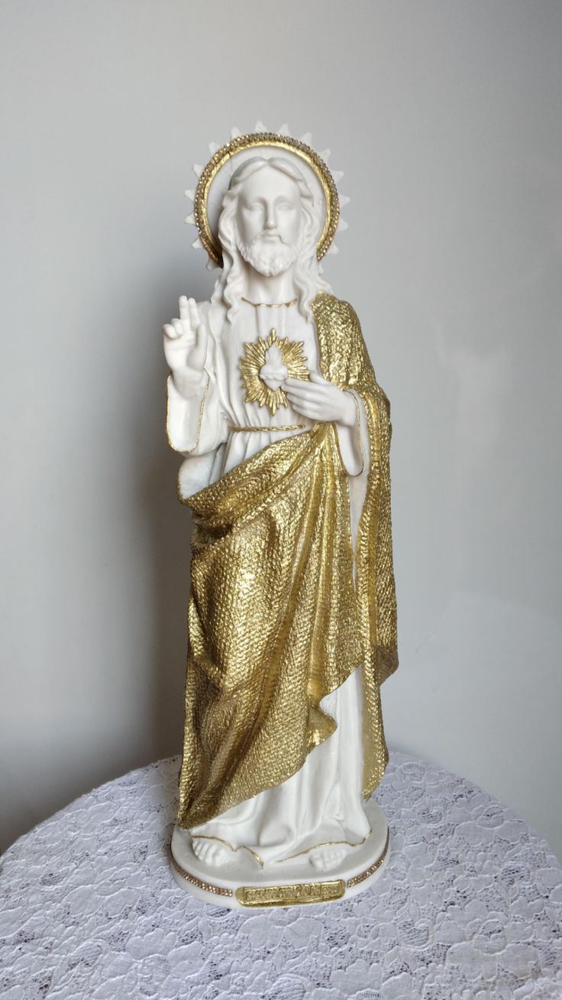
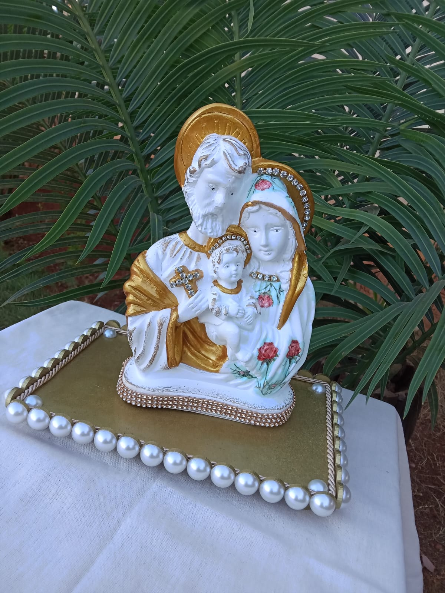

-
nossa senhora aparecida
Descriçâo
Quem é devoto sabe que contar com uma linda imagem do santo de sua devoção é muito importante e faz toda a diferença nos momentos de oração e reflexão. Por isso, a imagem de Nossa Senhora de Aparecida é o que faltava para você fortalecer ainda mais sua fé no dia a dia. A imagem de Nossa Senhora de Aparecida acompanha as melhores tendências de fabricação com material de qualidade que possibilitam um "toque todo especial" com todos os demais elementos que compõem o ambiente do lar.
-
virgem maria
Descriçâo
Quem é devoto de Virgem Maria sabe que contar com uma linda imagem do santo de sua devoção é muito importante e faz toda a diferença nos momentos de oração e reflexão. Por isso, a Imagem de Virgem Maria é o que faltava para você fortalecer ainda mais sua fé no dia a dia.
-
nossa Senhora de fatima
Descriçâo
Dirigido a católicos, em geral, esse “poderoso livrinho” tem a missão de mostrar quão bela é a devoção à Nossa Senhora de Fátima e quais as bênçãos que são recolhidas por aqueles que abraçam a vida de oração diária e a renúncia à toda influência do maligno. O devocionário conta também um pouco da história dos três pastorinhos que tiveram a graça de receber as visitas de Nossa Senhora, em Fátima: Lúcia, Francisco e Jacinta. Impulsionados pela Virgem, os três mostraram ao mundo o quanto podemos fazer para desagravar seu coração, e oferecer a ela as flores da conversão do mundo. Três pastorinhos - Lúcia, Francisco e Jacinta - receberam a graça da visitação de Nossa Senhora, que lhes deu a missão de divulgar a devoção que consolaria seu Imaculado Coração. Vestida de branco e mais brilhante que o sol, ela realizou milagres e ordenou: “Orai, orai muito. Rezem o terço todos os dias, para alcançar a paz para o mundo e o fim da guerra.” Através deste devocionário, com suas reflexões e novenas, e abraçando uma vida de oração diária, tenha a certeza de que você também receberá - pelas mãos de Nossa Senhora de Fátima - os frutos da verdadeira conversão e a paz para você e sua família.
-
jesus Cristo
Descriçâo
Quem é devoto sabe que contar com uma linda imagem do santo de sua devoção é muito importante e faz toda a diferença nos momentos de oração e reflexão. Por isso, a Imagem de Jesus Cristo Ressuscitado é o que faltava para você fortalecer ainda mais sua fé no dia a dia. Além disso, é produzida com dedicação e carinho para você homenagear seu santo protetor com muita fé e amor! A Ressurreição de Jesus é o nome dado à fé cristã de que Jesus Cristo retornou à vida no domingo seguinte à sexta-feira na qual ele foi crucificado. É uma doutrina central da fé e da teologia cristã e parte do Credo Niceno: "Ressuscitou dos mortos ao segundo dia, conforme as Escrituras". Acreditar na ressurreição de Jesus, para o cristão, é uma condição de existência: é-se cristão porque se acredita que Jesus está vivo, triunfou da morte, ressuscitou, e é, para todos os humanos, o único mediador entre Deus e os homens. Dessa mediação participam a seu modo tudo aquilo (o universo e tudo aquilo que contém) e todos aqueles (dos mais sábios aos mais humildes) que, pela vida e pela palavra, proclamam o poder e a misericórdia de Deus que sustenta todo o universo e chama todos a participar de sua vida.
-
sagrada familia
Descriçâo
A Imagem da Sagrada Família é confeccionada em material de alta qualidade, que garante mais resistência e durabilidade a esta peça. Sua riqueza de detalhes, assim como as cores vivas e traços únicos combinam de uma forma harmônica, o que torna essa peça ainda mais bonita e perfeita para fazer parte do seu altar. A devoção à Sagrada Família nasceu a partir dos relatos evangélicos de Lucas e Mateus. Esses dois evangelistas relatam fatos relativos ao anúncio, nascimento e infância de Jesus nos primeiros capítulos de seus Evangelhos. E nesses relatos encontramos a beleza da Sagrada Família composta por Jesus, Maria e José.